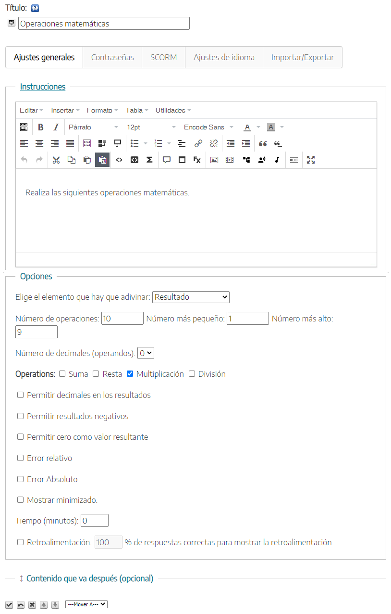
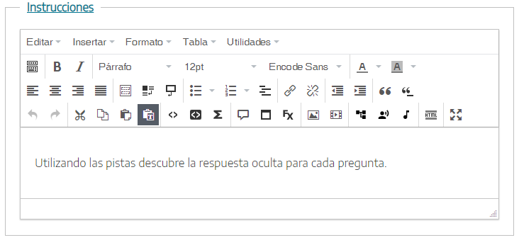

Utilizaremos este iDevice para crear actividades con operaciones matemáticas básicas (suma, resta, multiplicación y/o división) aleatorias en las que el alumnado tendrá que averiguar el resultado, el operador o uno de los operandos. Dada la flexibilidad de este iDevice, podremos definir:
- Si queremos que el alumnado adivine el resultado, el operador, el primero o segundo operando o cualquiera de las anteriores.
- El número más alto y más bajo, el de operaciones y los decimales
- Los errores (relativos y/o absolutos)
Al seleccionar el iDevice "Operaciones matemáticas" del listado de iDevices se nos mostrará lo siguiente en nuestro eXeLearning:

En la parte superior, tendremos la posibilidad de modificar el título del iDevice y asignar un icono. Por último, tendremos la opción de incluir un contenido posterior (contenido que va después. Opcional).
Vemos que existen una serie de pestañas (modo avanzado activado), cada una con una funcionalidad diferente que nos permitirá configurar nuestro juego de una manera muy flexible.
Ajustes Generales
La pestaña "Ajustes Generales" es la que se muestra por defecto al crear el iDevice Operaciones matemáticas.
En esta pestaña definiremos las instrucciones para realizar el juego, las diferentes opciones y configuraciones disponibles y las preguntas con las pistas que determinemos.
- Al hacer clic sobre el apartado "Instrucciones" se abrirá un cuadro de texto en donde podremos enunciar las instrucciones a seguir.
- Al hacer clic sobre el apartado de "Opciones" podremos decidir:
- El elemento a adivinar: resultado, operador, operandos y aleatorio
- Número de operaciones a realizar e intervalo de números.
- Número de decimales en los operandos
- El tipo de operación (sumas, restas, multiplicaciones, divisiones)
- Y diversas opciones como permitir decimales en resultados, negativos, cero, errores...
De igual forma, podremos limitar el tiempo para la realización de la actividad.
Contraseñas
En la pestaña "Contraseñas" podremos crear un itinerario de desafíos en el que los jugadores no podrán acceder a una nuevo juego hasta que consigan una clave en una actividad previa. Para esto, podremos establecer un código de acceso así como un mensaje que se mostrará a los jugadores cuando alcancen un porcentaje fijado de aciertos, y que podrán usar como contraseña para un nuevo desafío o una actividad posterior.

Ambos son opcionales, y su configuración aparecerá solo si los marcamos, como en la imagen.
SCORM
En la pestaña "SCORM" podremos determinar si queremos guardar los resultados obtenidos por nuestro alumnado y en qué condiciones queremos hacerlo cuando exportemos nuestros contenidos.

Hay que tener en cuenta que esta opción de guardado solo estará disponible para exportaciones SCORM y cuando publiquemos nuestros contenidos en plataformas como Moodle u otras plataformas LMS compatibles con SCORM.
Ajustes de idioma
Pestaña en donde podremos personalizar los textos y mensajes automáticos que genera el iDevice.